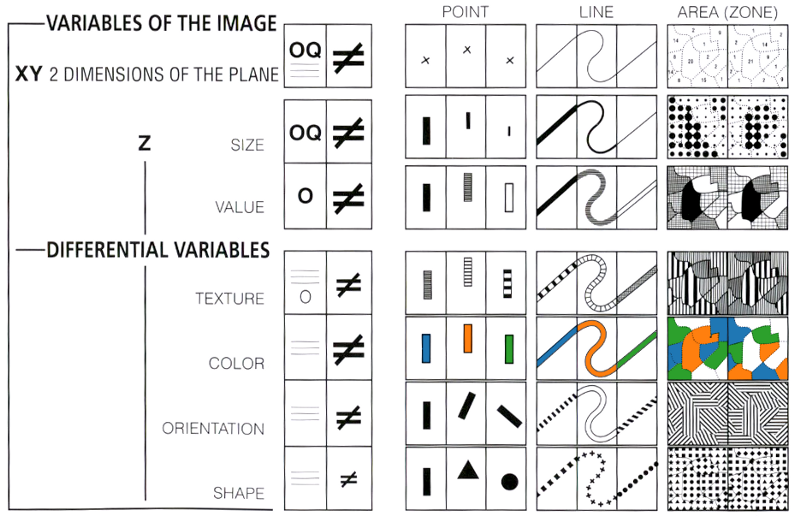

Scales are a mapping from inputs to outputs. That is, a scale is a function that takes an abstract value and returns a visual value. A simple example is using two scales X and Y to create a scatterplot. X and Y each takes arbitrary values and map them to a dimension (usually from 0 to chart width).
|  |
Setting scales:
d3.tsv('data/' + scale_f, function(data) {
// look at the data
//console.log(data);
// Convert the attributes to nums
data.forEach(function(d) {
d.close = +d.close;
d.date = parse_time(d.date);
return d;
});
// Use D3's scales
// Numeric
var scl_linear = d3.scaleLinear().range([0, 200]);
scl_linear.domain( // Linear only needs the min/max
[d3.min(data, function(d) { return d.close; }),
d3.max(data, function(d) { return d.close; })]
);
// Time
var scl_time = d3.scaleTime().range([0, 200]);
scl_time.domain( // Same with time
[d3.min(data, function(d) { return d.date; }),
d3.max(data, function(d) { return d.date; })]
);
});
Above scales mapped as axes:
This mapping method uses color to encode polygon values. It employs a scale to assign a visual variable, in this case a HEX color value such as #000000. Example choropleth.